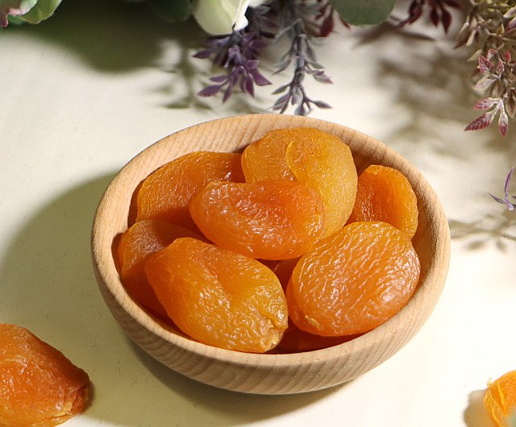

杏桃
古代良藥
杏桃為薔薇科植物，杏或山杏的果實。杏桃中含有豐富的維生素A，在水果中僅次於芒果，位居第二。
杏桃中含有的扁桃甘也有抗癌活性，南北朝《齊民要術》中就有"杏酥粥"食療記載。中國人將杏仁當成藥材來使用已有數千年的歷史，在明朝李時珍的《本草綱目》中就記載著:"杏仁性味辛苦甘溫、有小毒。北杏仁味苦，又稱苦杏仁，中醫所說的杏仁多是指此，具有許多療效。
新鮮的杏桃固然富含銅、鐵、鉀、纖維素和β胡蘿蔔素，但曬乾以後，營養價值卻更高。

產地
杏桃以土耳其產量最大，堪稱土耳其的國寶之一。
具美名:土耳其水果之王，
國內水蜜桃市場偏好大果，但近年國人也有減少攝取熱量、希望食用小份量桃的消費需求，杏桃又有著類似杏的特殊外觀，可以提供消費市場另類選擇。水蜜桃甜度一般在12至14度間，杏桃甜度約13度，酸度0.3%則偏低，更合乎國人所喜好的水蜜桃口感。
植物力量
雖然杏桃的植物學名彷彿與亞美尼亞有所關連，但一般認為亞洲中部的山區才是其根源所在。絲綢之路的商隊將杏樹帶到此處，使杏桃在此地區廣泛生長。到了15世紀，杏樹於法國出現，後來更由法國農學家兼園藝家拉昆提尼將此植物帶到凡爾賽宮。人們便使用杏桃這種小巧圓潤、帶綿密絨毛的水果，製成美味的果醬和其他甜品。杏桃油則從杏核中萃煉而成。
資料來源: